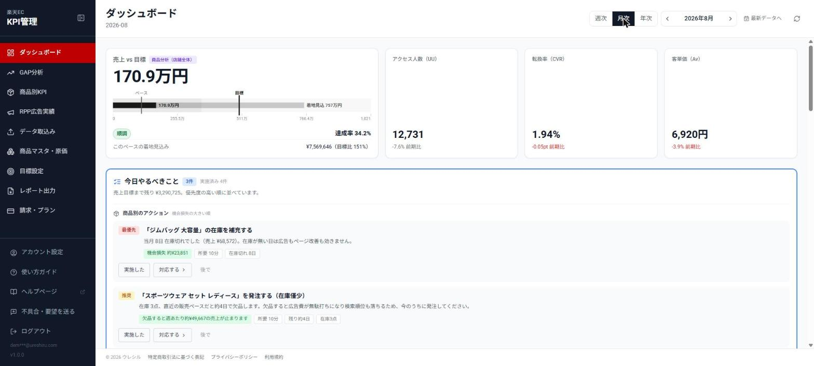
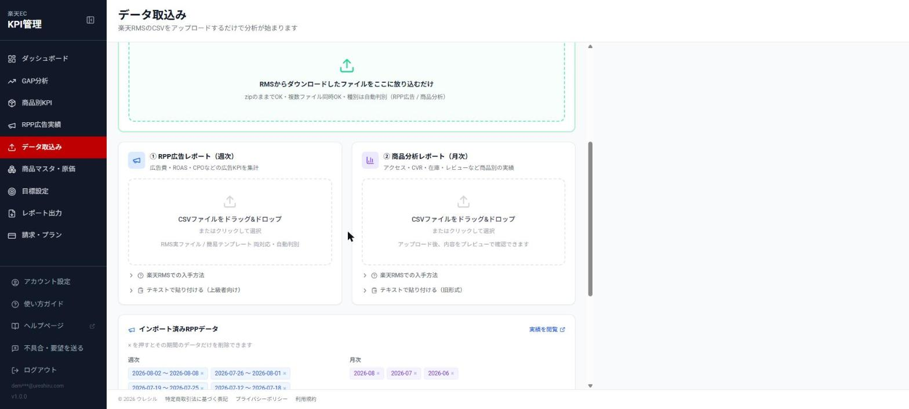
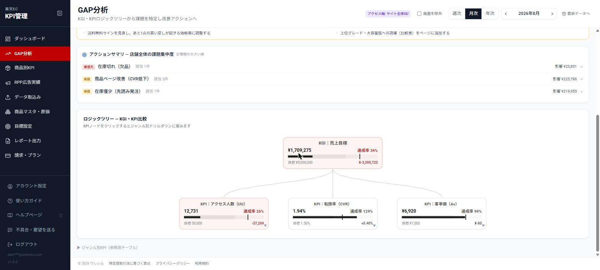
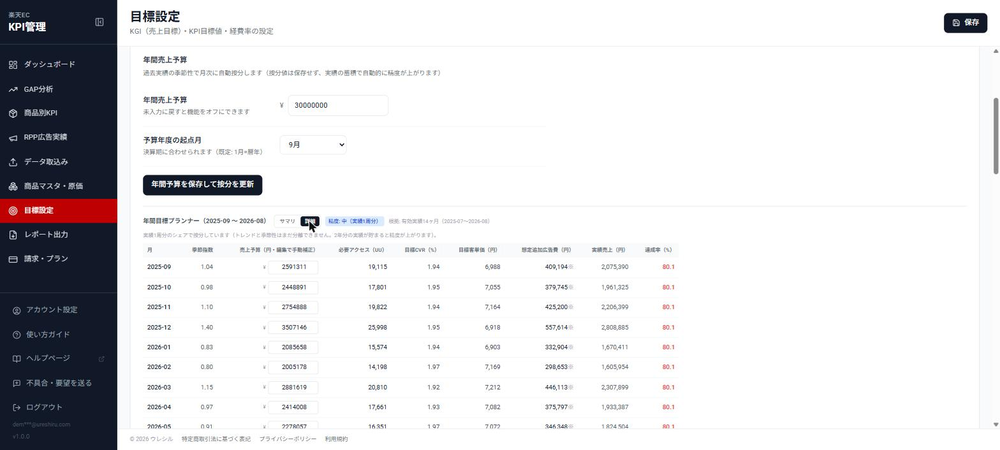
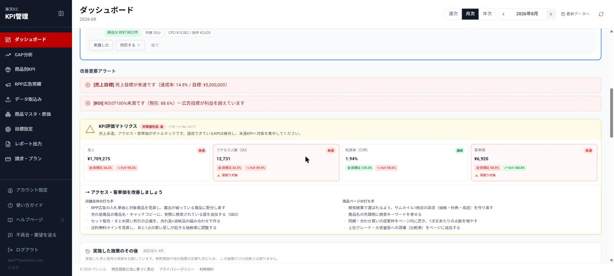

次の一手が、毎週決まる。
楽天RMSのCSVを取り込むと、売上を「アクセス × 転換率 × 客単価」に分解し、どのKPIが足を引っ張っているかを判定して、今週やることまで出します。
トライアル中の解約で料金はかかりません。導入前に相談したい方は 無料デモ（30分） もご利用いただけます。

ROASは見ている。でも、原価と経費を引いたあとに利益が残っているかは、月末までわからない。
そして「どの商品から直すか」は、だいたい勘で決めている。RPPを回している店舗ほど、数字の管理が運用に追いつかなくなります。
ウレシルが回す5つの工程
数字を並べて終わりにしません。取り込んでから、次の打ち手が決まって、その効果を確かめるところまでを1本の流れにしています。
RMSのCSVを、ダウンロードしたまま放り込む
RPP広告レポート（週次）と商品分析レポート（月次）を、そのまま取り込めます。API連携の申請も、列の並べ替えも、文字コードの変換も要りません。zipのままでも、複数ファイル同時でも受け付けます。

売上が落ちた原因を、階層で絞り込む
売上を「アクセス × 転換率 × 客単価」に分解し、店舗全体 → ジャンル → 商品の順に辿ります。17のパターンで現状を判定し、どのKPIがボトルネックかを名指しします。週次・月次・年次のどれでも見られます。

年間予算から、今月の必要数字を逆算する
年間の売上予算を、過去実績の季節性で月次に按分します。そのうえで各月に必要なアクセス数・転換率・客単価を逆算するので、「今月あと何人集めればいいか」が数字で出ます。商品ごとの目標も、過去実績から同じ考え方で算出できます。

「今日やること」まで落とし込む
CPOが限界注文獲得単価（Limit CPO）を超えたとき、ROIが100%を割ったときに警告します。そのうえで、店舗全体の打ち手と商品ページの打ち手を分けて提示します。「気づいたら広告で利益が溶けていた」を防ぐための工程です。

打った施策の、その後を追う
実施した施策を記録しておくと、翌月の実績と突き合わせて効果を確認できます。季節要因や他の施策の影響も混ざるため、その施策だけの効果とは限りません。それでも「やりっぱなしにしない」ための土台になります。
導入事例
ウレシルの診断結果をもとに広告運用を見直した店舗の実績です。
200%台 300%以上
- 店舗
- 靴ジャンルのショップ（A社・匿名）
- 期間
- 2026年6月〜7月
- 実施したこと
- ウレシルを導入し、診断結果に基づいて広告運用を見直し
※ 掲載については当該企業の許可を得ています。上記は特定の店舗・特定の期間における実績であり、効果を保証するものではありません。成果は商材・価格帯・競合状況・広告予算などによって変わります。
そのほかの画面
工程の主役ではありませんが、日々の運用で使う画面です。
| 商品別KPI | 商品ごとの売上・広告費・注文件数・転換率・ROAS・利益の一覧。CPOがLimit CPOを超えた商品には警告が出ます。 |
|---|---|
| RPP広告実績 | 取り込んだRPP広告データを週次・月次で確認。広告の状態を判定する診断パネルつき。 |
| 商品マスタ・原価 | 商品ごとの売上原価とカテゴリを管理します。ここを入れると利益・ROI・Limit CPOが正しく計算されます。 |
| レポート出力 | 集計済みのKPIをCSVで書き出せます。経営者・マネージャーへの共有用。 |
料金
初期費用なし。最低契約期間はありません。
ウレシル 月額プラン
- ダッシュボード・GAP分析・全機能
- 週次・月次・年次の3期間に対応
- データ保存期間の上限なし
- 1店舗・ユーザー数無制限
- 週次・月次の改善アラート表示
- メール・アプリ内フォームでのサポート
トライアル中に解約すれば料金は一切かかりません。
運用まで一緒にやってほしい方へ
ECコンサルティングは、店舗の規模・課題をお聞きしたうえで個別にお見積りします（¥150,000〜）。KPIレビュー会、RPP入札・予算配分の改善提案、商品ページ改善のアドバイスなど。
コンサルの相談をするよくある質問
楽天RMSとのAPI連携は必要ですか？
不要です。RMSからダウンロードできるRPP週次レポートと商品分析CSVを、そのまま取り込むだけで利用できます。
複数店舗を運営していますが使えますか？
現在は1契約1店舗です。複数店舗をご希望の場合はお問い合わせください。
原価を入れていなくても使えますか？
売上・アクセス・転換率・客単価などの売上系KPIは、原価を入れなくても確認できます。利益・ROI・Limit CPOといった利益系の指標は、商品マスタで売上原価を設定すると計算されるようになります。
解約はいつでもできますか？
はい、最低契約期間はありません。解約をご希望の場合は、アプリ内のお問い合わせフォームよりご連絡ください。ご連絡いただいてから2〜3営業日以内に手続きを完了し、次回以降の請求を停止します。手続き完了までの間も、現在の請求期間の終了日まで引き続きご利用いただけます。無料トライアル期間中の解約は即時・無条件で完了し、料金は一切発生しません。詳細は利用規約をご確認ください。
データの安全性は？
お預かりしたデータは暗号化して保管し、個人を特定できる形で第三者に提供することはありません。詳細はプライバシーポリシーをご覧ください。